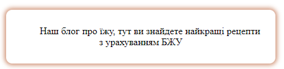
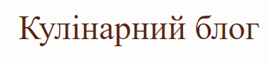
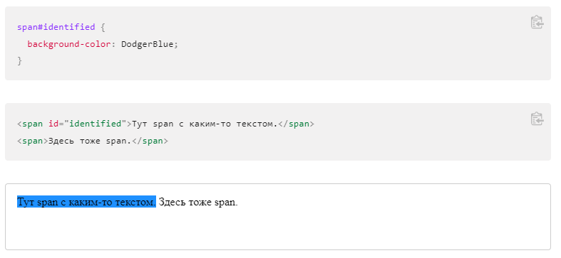

Селектор знаходиться на початку CSS-правила, до фігурних дужок, і визначає до яких HTML-елементів застосуються властивості і значення з правила. Найпростіші (і найпопулярніші) селектори - це селектори за тегами і по класах. Селектори за тегами містять ім'я тега без символів <і> і застосовуються до всіх відповідних тегів. Селектори по класах починаються з точки, за якою йде ім'я класу, і застосовуються до всіх тегам з відповідним атрибутом class.
Селектори класу:

.text {
padding: 10px 40px;
text-align: center;
border-radius: 10px;
box-shadow: 0 0 7px 3px #aa3e0c87;
text-indent: 30px;
padding: 10px 20px 10px 20px;
margin: 20px auto;
width: 400px;
}

.logo {
background: #fcfcfba1;
padding: 20px 20px;
text-align: center;
}
Селектори id:
Селектори тегу:
.logo h1 {
position: relative;
color: #5C2610;
font-size: 3em;
font-weight: normal;
line-height: 1;
padding: 10px 0;
margin: 0;
display: inline-block;
}